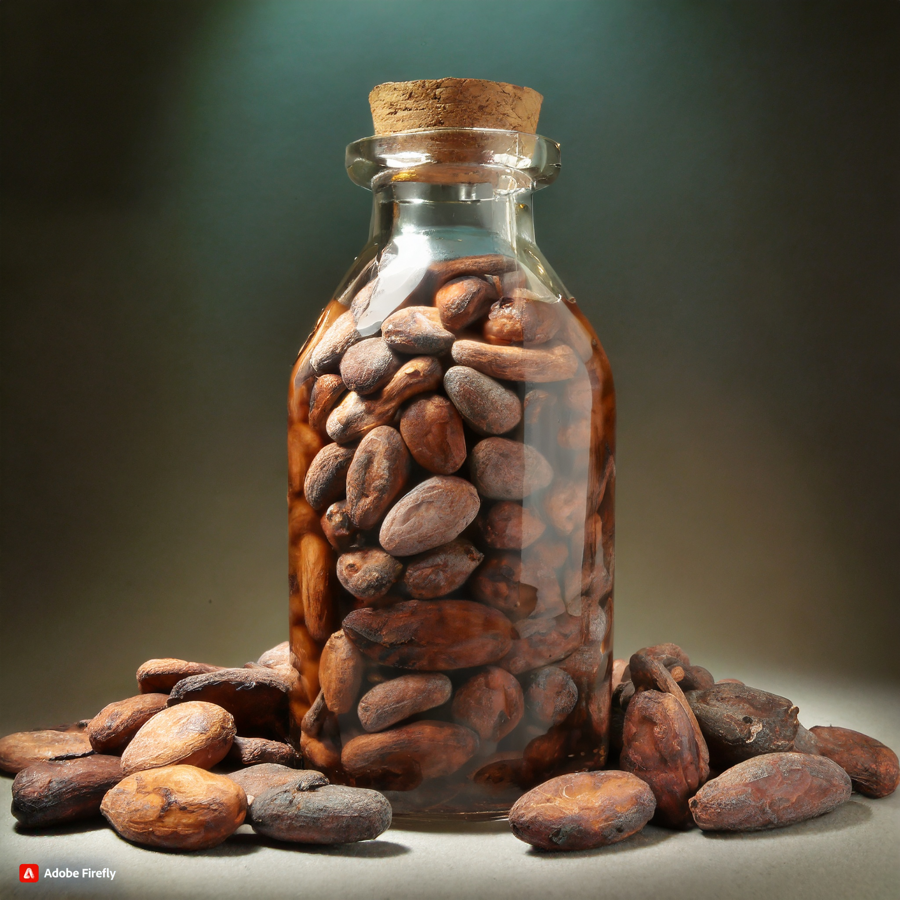

產品型態介紹
可可豆、可可粉、可可膏、可可脂...差在哪裡呢?

可可豆
烘烤、研磨後即包裝成初級加工產品，可直接食用或應用於料理。
可可粉
經過烘烤的可可豆，研磨成液態的可可液中提取可可脂後剩餘的成分，經常用於甜點烘焙。

可可膏
固形巧克力，即市面上常見的巧克力未倒入模型前的狀態，適合提供給想創意塑形巧克力、沖泡飲用可可的業者。

可可脂
又稱「可可油」，是在巧克力製作過程中自可可豆榨取的植物性油脂，占可可豆約一半的重量，賦予巧克力入口即化的口感。「白巧克力」即是以可可脂為主成分所製成之甜點。